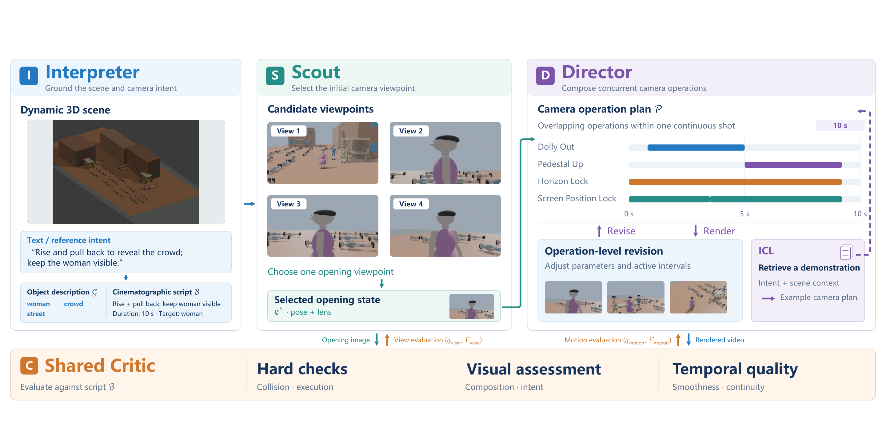

AGENTIC 3D CINEMATOGRAPHY
FilmFlow: Agentic System for
3D Virtual Film Cinematography
From language and reference videos to executable camera motion.
Paper under double-blind review

FROM INTENT TO MOTION
Virtual cinematography, directed by agents.
Complex camera motion is central to visual storytelling, yet translating cinematographic intent into controllable, executable camera trajectories remains challenging. FilmFlow converts natural-language instructions or reference videos into explicit camera trajectories for dynamic 3D environments. A Director composes concurrent atomic operations to jointly control translation, rotation, and framing. An Interpreter grounds the intent in the scene, a Scout selects an initial viewpoint, and a Critic provides visual feedback for iterative refinement.
We also introduce CinemaBench, with 150 Blender scenes, 750 text-directed tasks, and 60 reference videos, to evaluate both text-directed and reference video-directed camera generation.
THE FILMFLOW FRAMEWORK
Plan. Render. Review. Refine.
Four specialized agents turn cinematographic intent into scene-grounded camera plans.

Interpreter
Ground the input in the scene and extract camera intent.
Scout
Search for an initial viewpoint that supports the shot.
Director
Compose camera operations with explicit timing and parameters.
Critic
Review rendered results and guide iterative refinement.
01 / TEXT-DIRECTED CAMERA GENERATION
Long takes
Continuous camera motion across an extended cinematic moment.
02 / TEXT-DIRECTED CAMERA GENERATION
Short shots
A closer look at individual camera movements and compositions.
03 / REFERENCE VIDEO-DIRECTED CAMERA GENERATION
Video-to-video
Translate camera intent from a reference video into a target 3D scene.
THE BENCHMARK
CinemaBench
A benchmark for text-directed and reference video-directed camera generation in static and dynamic Blender scenes.
- 150
- Blender scenes
- 750
- Text-directed tasks
- 60
- Reference videos
EXPLORE THE RESEARCH
Resources
Read the paper
Framework, benchmark, and evaluation.
Code
Release link to be added.
CinemaBench
Scenes and camera-generation tasks.